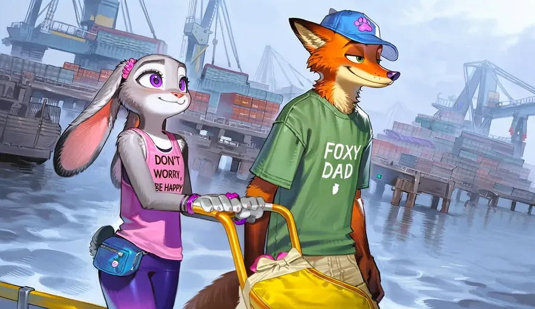
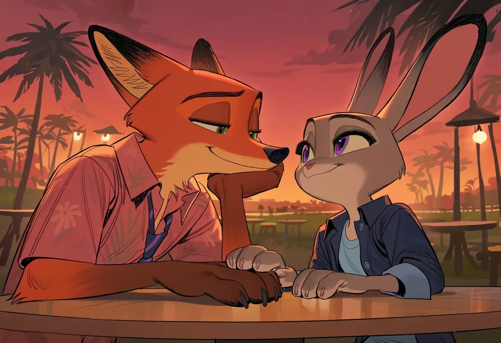
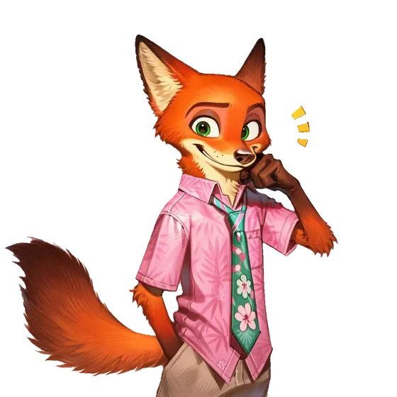
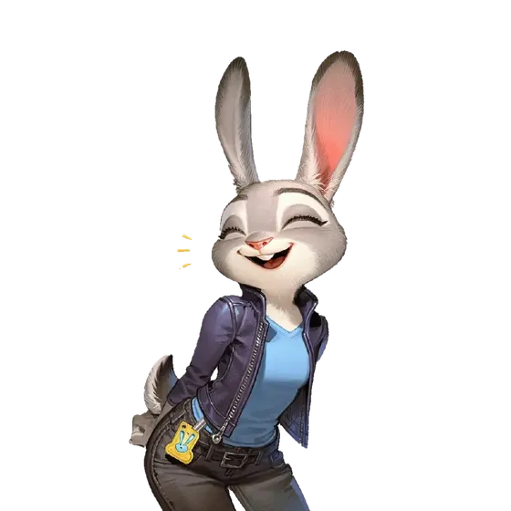
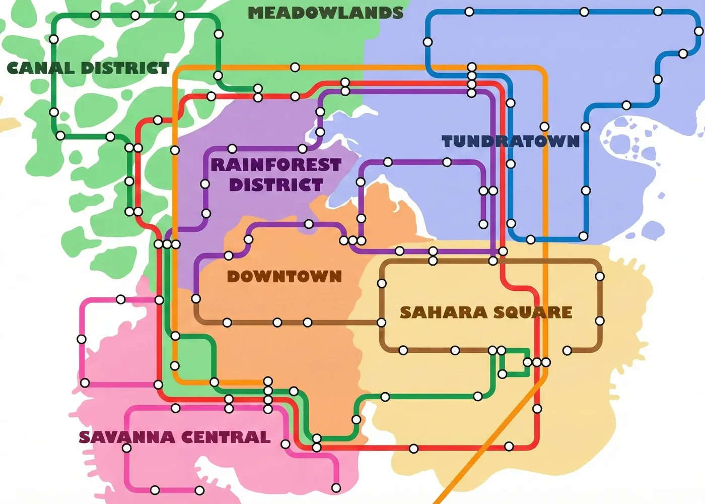
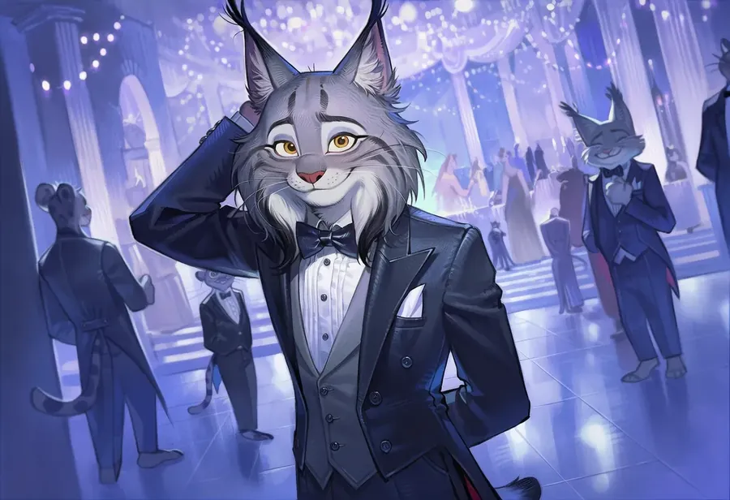
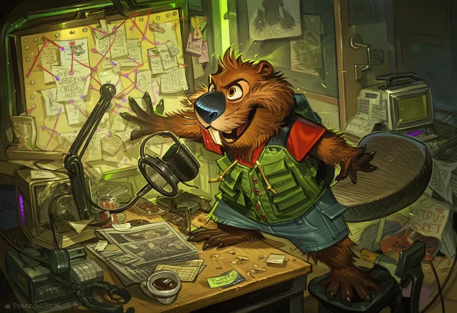
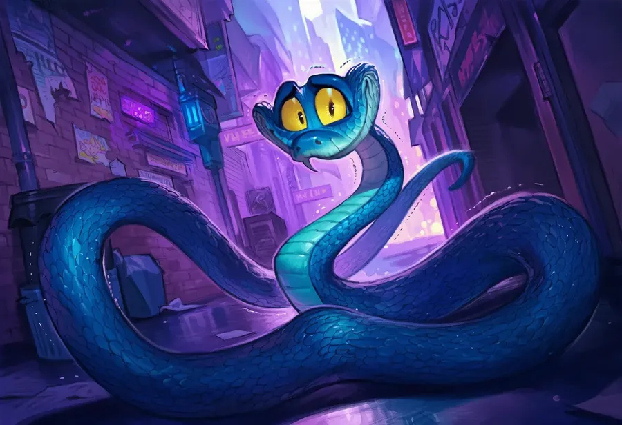
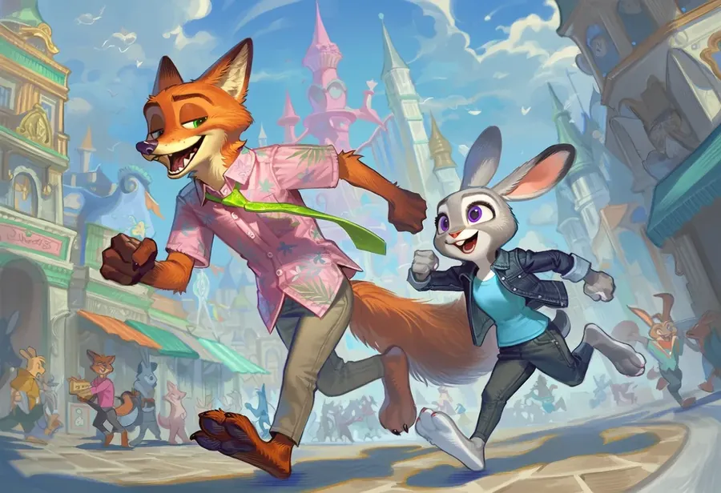
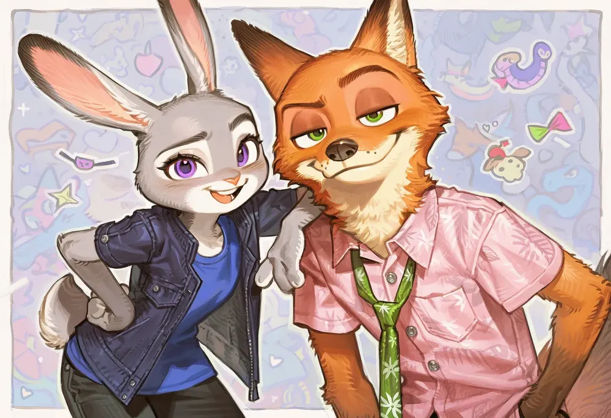

CASE 01

밀수꾼 추적
주토피아 2의 스토리를 따라갑니다. 닉이 정식으로 경찰로 임관한 지 일주일, 신참 콤비가 밀수꾼 추적 임무에서 선배들보다 먼저 출동합니다.
📌 메인 스토리 플롯 로어북 활성화 필요

신참 경찰 닉과 베테랑 주디, 100주년을 맞은 도시, 그리고 100년 만에 나타난 뱀. 영화의 스토리를 따라가도, 엔딩 그 이후를 걸어도 좋아요.



주토피아의 도시 문명은 포유류 중심으로 구축되어 있습니다. 뱀은 100년 전부터 추방되어 정치적 금기로 남아 있고, 유일한 예외는 양서류·해양 포유류·소형 도마뱀이 거주하는 특구 마쉬 마켓(Marsh Market)뿐입니다.

주토피아 2의 스토리를 따라갑니다. 닉이 정식으로 경찰로 임관한 지 일주일, 신참 콤비가 밀수꾼 추적 임무에서 선배들보다 먼저 출동합니다.

주토피아 100주년 행사, 링슬리 저택 파티에서 캐나다스라소니 포버트 링슬리와 마주칩니다. 화려한 파티 뒤에 숨겨진 비밀은?

음모론자 비버 니블스 메이플스틱의 팟캐스트에 초청받습니다. 무슨 일이 일어날까요?

100년 동안 주토피아에 발을 들인 적 없는 뱀, 게리 더 스네이크. 새벽 2시 15분, 툰드라타운 부두에서 그가 가족의 무고함을 증명해 달라고 요청합니다.

모든 일이 끝난 뒤. 링슬리 왕조 몰락, 렙타일 래빈 재개방, 윈드댄서 시장의 통합 선언. 사바나 센트럴의 황금빛 노을 아래, 누군가를 만나러 갑니다…
빈 퍼스트 메시지. 원하는 대로 자유롭게 시작하세요.
캐릭터 에셋과 배경 에셋이 분리되어, 현재 장소에 따라 배경이 자동으로 바뀌어요. 호버링 시 확대 효과 지원 — 위 지역 노선에서 직접 체험해 보세요.
스마트폰 UI 형태의 상태창. 왼쪽 폰처럼 탭을 눌러 확인할 수 있어요.
주토피아 전역 지도에서 현재 위치가 핑으로 표시돼요. 원작 스토리 / After Everything에 따라 활성화되는 핑이 달라요.
시작할 때 6개 시나리오 중 하나를 고르고, 한국어 / English 버튼으로 언어를 전환할 수 있어요. 모든 시나리오가 두 언어로 제공돼요.
주토피아 2의 디테일한 스토리 플롯을 따라가는 몰입형 경험. 엔딩 이후의 이야기(After Everything)도 별도로 제공돼요.
스토리 진행에 따라 맵 핑을 조절하세요.
현재 기본값: After Everything 정규식 활성화 상태

주토피아 2를 바탕으로 한 2차 창작 팬픽션 시뮬봇임…
최대한 주토피아 2의 내용을 담으면서 영화의 느낌을 살리려고 노력했음 흑흑
특히 이거 만들면서 루아 트리거나 정규식 공부 많이 한 듯
그리고 피드백 많이 준 챗챈 유저들… 감사합니다…..